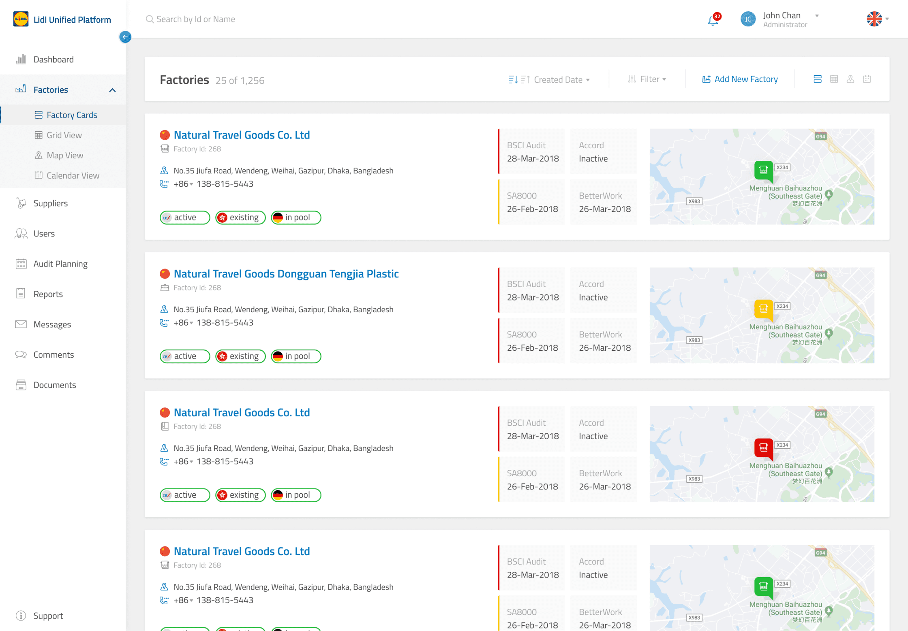
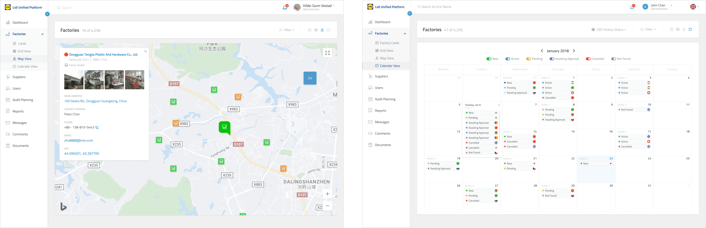
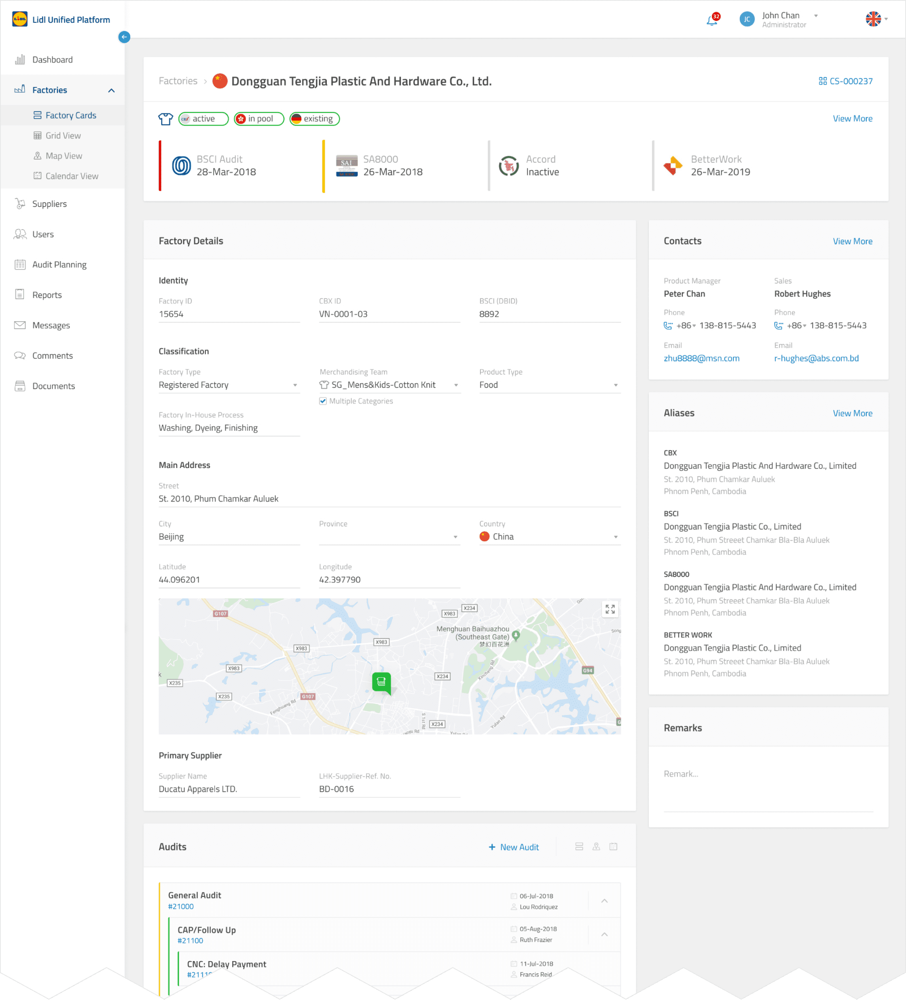
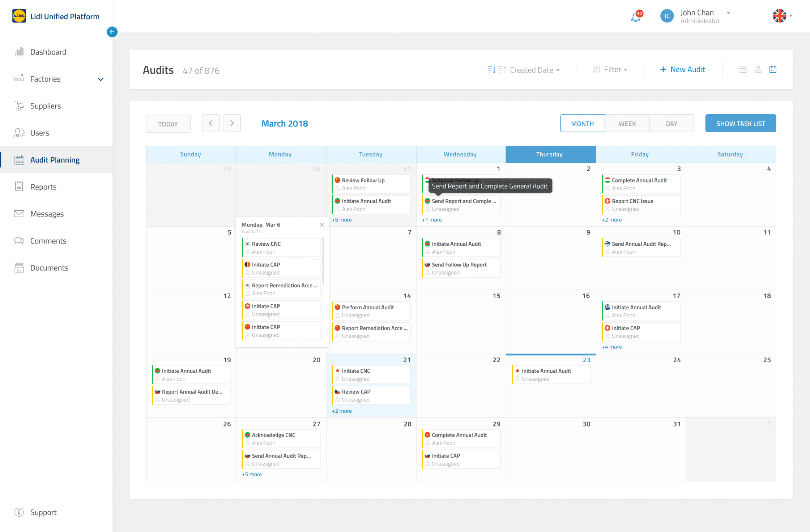
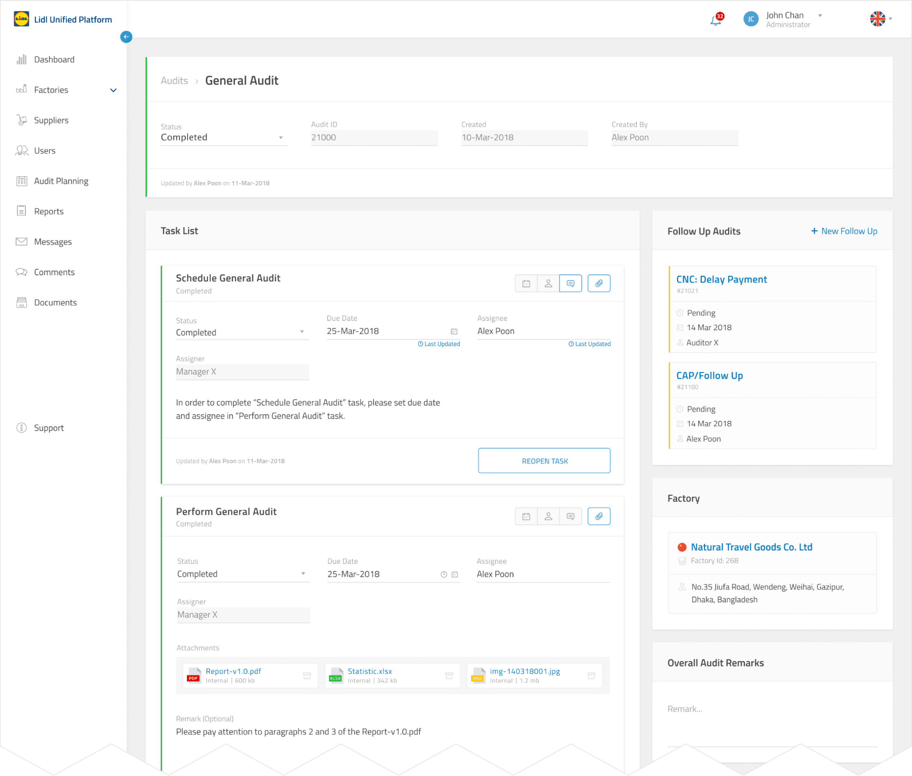
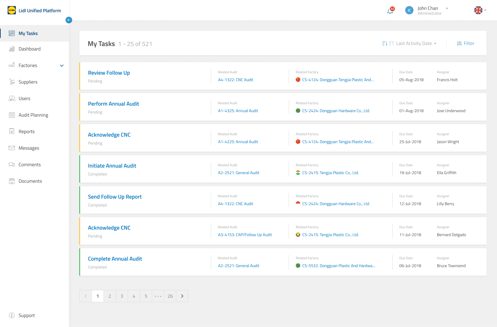
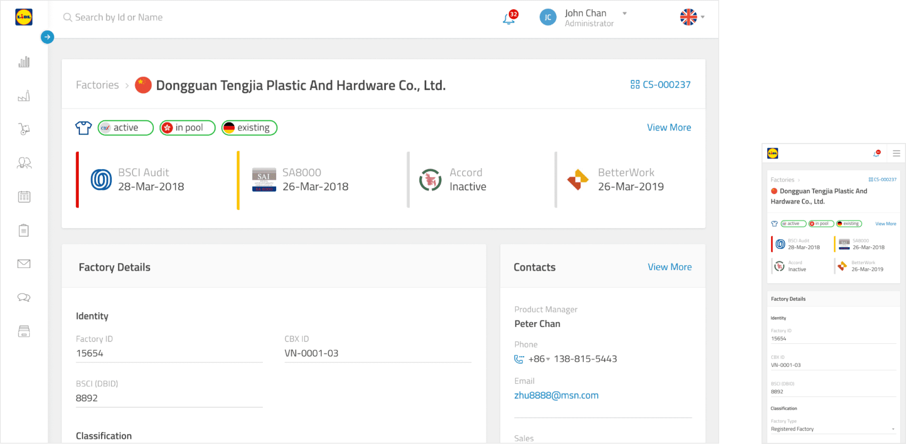
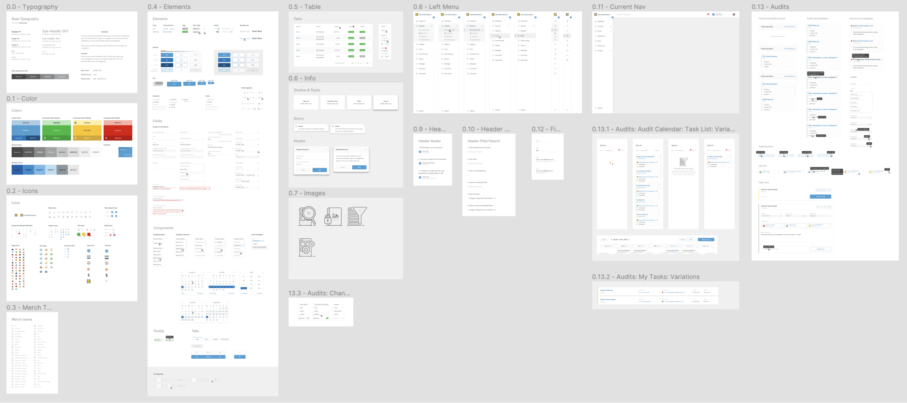

About Product
LUP is a supply chain compliance system helping LIDL ensure vendors meet legal and internal standards across 3,000+ factories in 18+ countries.
I was the sole designer, working from ideation to launch and shaping everything from information architecture to final UI and design system.
Process
As the sole designer, I worked closely with Business Analyst, and validated all key decisions with Product Owner on the client side and two Audit Managers as domain experts.
Discovery
Mapped the spreadsheet structure, interviewed auditors, understood field workflows. The 140-column spreadsheet became the blueprint for the data model and IA.
Ideation & Validation
Explored approaches for core flows, validated with the PO and Audit Managers through wireframes and prototypes
Iterative Delivery
Design delivered in sprints. MVP focused on factory management and audit tracking; later releases added dashboard, calendar planning, responsive layouts, and supporting modules.
The Problem
The auditors team managed all vendor and audit data in one massive Excel spreadsheet — 140+ columns, 3,000+ rows, multiple people editing simultaneously. This led to data integrity risks (overwritten entries, conflicting edits), no access controls.
Solution
Web platform that replaced the spreadsheet with structured, role-based workflows:
Dashboard
Audit expiration stats, internal audit scores, factory and database statuses, APAC geographic distribution, and a real-time activity feed — giving managers an at-a-glance picture of the entire compliance operation .
Factories
The heart of the system. Rich detail pages. Multiple views. Let auditors explore their factory network the way that fits their task.


Factory Details

Audit Planning & Execution
Calendar-driven planning with list and map alternatives. Each audit contains a structured task list. Replacing informal tracking in spreadsheet comments and email threads.


Tasks

Responsive is a Must
Laptop at the office, tablet during factory visits, phone on the go. The full experience works across breakpoints — the factory detail page, being the most information-dense, required especially careful prioritization for mobile

Design System
Built from scratch — typography, colors, elements, tables, navigation, icons, and component patterns — ensuring consistency across a large application developed over 18 months.

Impact
-
3,000+ factories across 18+ APAC countries managed through a structured system, fully replacing the 140-column spreadsheet.
-
Improved usability. Scheduling, tasks, follow-ups, documents, and communication — all in one place instead of spreadsheets, emails, and shared drives.
-
Fewer data errors — structured entry with validation and role-based access eliminated overwritten cells, conflicting edits, and lost updates.
-
Design system kept UI consistent across 9+ modules over 18 months.
-
Responsive design let auditors update statuses from a tablet or phone during field visits.
-
Product launched to production and adopted by the LIDL APAC compliance team.
Reflection
The biggest lesson: when replacing a tool people have used for years, you have to understand not just what data it holds, but how they use it. That empathy is what makes the new system feel like an upgrade, not a disruption.